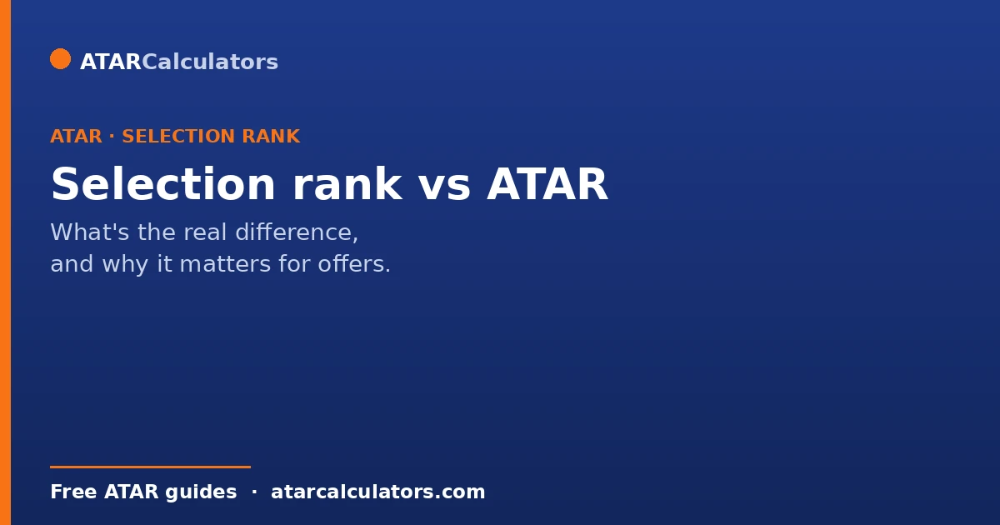
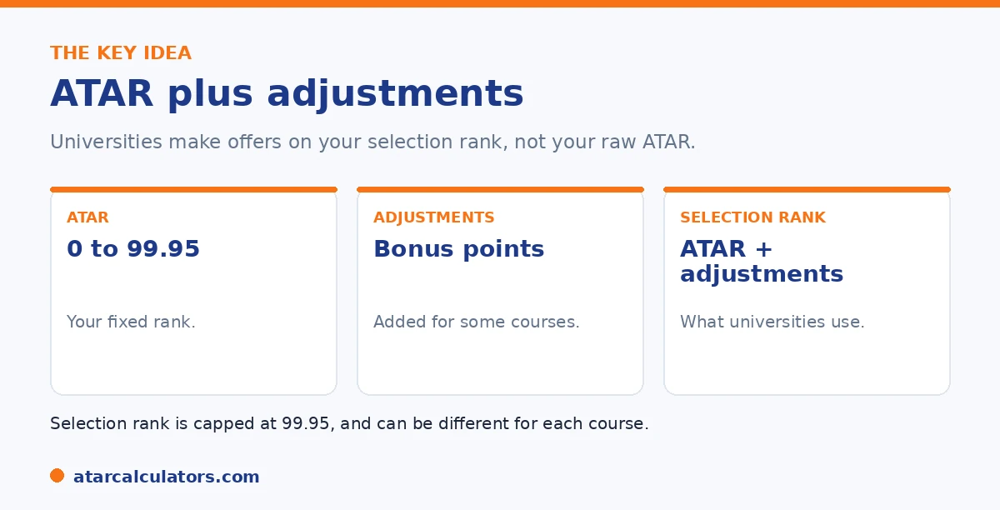

Here is the short version. Your ATAR is your fixed rank, from 0.00 to 99.95, showing your position in your cohort. Your selection rank is your ATAR plus any adjustment factors, once called bonus points, and it is what universities actually use to make offers. So your selection rank can be higher than your ATAR. It can also differ from course to course, because each university sets its own adjustment schemes. Adjustment factors do not change your ATAR.
Many students think the ATAR is the number universities use to make offers. It is not, quite. Universities use your selection rank, which is usually a little different.
Below is exactly how the two relate, and why it matters. To estimate your selection rank, use our selection rank calculator.
Key takeaways
- Your ATAR is your fixed rank, from 0.00 to 99.95.
- Your selection rank is your ATAR plus adjustment factors.
- Selection rank is what universities use to make offers.
- It can be higher than your ATAR, and never above 99.95.
- It can differ by course, since schemes vary by university.
- Adjustment factors do not change your ATAR.
What your ATAR is
Your ATAR, the Australian Tertiary Admission Rank, is a number from 0.00 to 99.95. It is a rank, not a mark. It shows your position compared with other students in your cohort. An ATAR of 80.00 means you are about top 20 per cent.
Your ATAR is fixed once results are released. Nothing you do during applications changes it. It is the starting point, not the finish line.
What your selection rank is
Your selection rank is your ATAR plus any adjustment factors you qualify for. Adjustment factors, once called bonus points, are extra points some universities add for things like your subjects, where you live, or your circumstances.

Your selection rank is the number a university actually uses to decide your offer. Because adjustments are added on top, your selection rank is often higher than your ATAR.
The key difference
So the difference is simple. Your ATAR is your raw rank. Your selection rank is your ATAR plus adjustments, and it is what gets you the offer.
The important point is that adjustments do not change your ATAR. Your ATAR stays the same. The adjustments only lift your selection rank for the courses where you qualify.
Want to see your likely selection rank?
Try the selection rank calculator →Your selection rank can differ by course
Here is a part many students miss. Your selection rank is not one fixed number. It can be different for each course you apply to.
That is because every university sets its own adjustment schemes, and often different schemes for different courses. So the same student can have one selection rank for a course at one university and a different one elsewhere. Your ATAR, by contrast, stays the same everywhere.
Course cut-offs are selection ranks
This also explains course cut-offs. When a university publishes a cut-off, it is usually the lowest selection rank that got an offer, not a raw ATAR. So you can sometimes get in with an ATAR below the published cut-off, if adjustments lift your selection rank.
For more on this, see our guide to selection rank cut-offs.
This single fact changes how you should read every cut-off you see. So it is worth dwelling on. A published cut-off is the selection rank of the last student admitted, and because selection ranks include adjustment factors, that student may well have had an ATAR below the figure quoted. In other words, the "cut-off" is not the minimum ATAR. It is the minimum adjusted rank. The practical consequences are real. First, do not rule out a course just because your raw ATAR sits a point or two under its published cut-off. This is because your adjustments might carry you over. Second, do not assume your raw ATAR being above the cut-off guarantees a place. This is because the cut-off can rise year to year with demand, and other applicants bring their own adjustments. Third, when you compare yourself to a cut-off, compare like with like. Your selection rank for that course against that course's cut-off, not your bare ATAR against a number that already has adjustments baked in. Read this way, a published cut-off becomes a useful planning tool rather than a hard wall. Students who understand it apply more widely, and more accurately, than those who treat the ATAR figure as final.
The 99.95 cap
One limit applies. Your selection rank cannot go above 99.95, the maximum ATAR. Adjustments can lift you toward it, but never past it.
So a student with a high ATAR has less room for adjustments to help. A student a little below a cut-off may find adjustments bridge the gap. To see how the rank is built, see our guide on how selection rank is calculated.
Is selection rank the same as ATAR?
No. Your ATAR and your selection rank are different numbers. Your ATAR is your raw Year 12 rank, on a scale up to 99.95. Your selection rank is your ATAR plus any adjustment points you qualify for, for a specific course.
So if you have no adjustments for a course, your selection rank for it equals your ATAR. But if you qualify for subject, regional or equity adjustments, your selection rank for that course is higher than your ATAR.
Is a selection rank usually higher than an ATAR?
For students who qualify for adjustments, yes. Because adjustment points are added on top of your ATAR, your selection rank is your ATAR or higher, never lower. Many students qualify for at least some adjustments, so a selection rank above the ATAR is common.
If you do not qualify for any adjustments for a course, your selection rank simply equals your ATAR. So it is either equal to or higher than your ATAR, depending on the adjustments that apply.
Which does the cutoff compare to?
This is the key point: universities compare your selection rank, not your bare ATAR, to the course cutoff. So it is your adjusted rank for that course that determines whether you meet the cutoff, not your ATAR on its own.
This means you can meet a cutoff even if your ATAR is below it, provided your adjustments lift your selection rank to or above the cutoff. See selection rank cutoffs.
A worked example
Suppose your ATAR is 84. For a particular course, you qualify for 3 subject adjustment points and 2 equity points, within the course’s cap. Your selection rank for that course is 89, while your ATAR stays 84.
If the course’s cutoff is 88, your ATAR of 84 alone would fall short, but your selection rank of 89 clears it. That is exactly how the two numbers differ in practice, and why the selection rank is what counts.
Different ranks for different courses
You do not have a single selection rank. Because adjustments depend on the course, you can have a different selection rank for each course you apply to. A course that rewards your subjects heavily gives you a higher rank than one that does not.
So your ATAR is one fixed number, but your selection ranks vary from course to course. This is why it helps to check the adjustments for each specific course, rather than assuming one rank applies everywhere.
The 99.95 ceiling
Your selection rank cannot exceed 99.95, the top of the scale, no matter how many adjustments you qualify for. So a very high ATAR leaves little room for adjustments to lift your rank further, because it is already near the ceiling.
For most students, though, there is plenty of headroom, and adjustments can raise a selection rank meaningfully without hitting the cap. The ceiling mainly limits students already near the top.
Why this confuses students
The distinction confuses many students because published cutoffs are often labelled as “ATAR cutoffs” when they are really selection-rank cutoffs. So a student compares their ATAR to the figure and thinks they fell short, when their selection rank may actually meet it.
So whenever you see a cutoff, remember it is compared to your selection rank, not your ATAR. Reading it as a raw ATAR requirement can make you rule out courses you could actually get into.
The takeaway
The takeaway is simple: your ATAR gets adjusted into a selection rank for each course, and it is the selection rank that meets cutoffs and wins offers. So focus on your likely selection rank for each course, not just your ATAR.
A selection rank calculator lets you add your likely adjustments to your ATAR and see your rank for each course, which is the number that actually matters.
When you learn your selection rank
You do not usually see a single selection rank in advance, because it depends on the course and the adjustments applied at offer time. Your ATAR is released first; your selection rank for each course is worked out when offers are considered, using your ATAR plus approved adjustments.
So before results, the best you can do is estimate your selection rank by adding your likely adjustments to a predicted ATAR. That estimate is what to compare against course cutoffs while you plan. See tracking your selection rank.
Does selection rank matter after you get in?
No. Selection rank matters only for admission. Once you are enrolled, it plays no further role, and your university performance is measured by your WAM and GPA instead. So selection rank is purely an entry mechanism.
This is worth remembering if your rank only just cleared a cutoff: it does not follow you into your degree. From day one at university, how you do is measured fresh, by your own results.
How to find your selection rank for a course
To estimate your selection rank for a specific course, start with your ATAR or predicted ATAR, then add the adjustments you qualify for that course, up to its cap. The result is the rank the university would compare to that course’s cutoff.
Because adjustments differ by course, do this for each course you are considering. A selection rank calculator makes it quick, so you can see your rank for several courses at once.
Common questions
What is the difference between selection rank and ATAR?
Your ATAR is your fixed rank from 0.00 to 99.95. Your selection rank is your ATAR plus any adjustment factors, and it is what universities use to make offers. So your selection rank can be higher than your ATAR.
Is selection rank the same as ATAR?
No. They are the same only if you get no adjustment factors. Otherwise your selection rank is your ATAR plus those adjustments, which is what a university actually uses to decide your offer.
Can a selection rank be higher than an ATAR?
Yes. Adjustment factors are added to your ATAR to form your selection rank, so it is often higher. It cannot go above 99.95, the maximum, and the adjustments do not change your ATAR itself.
Why does my selection rank change between courses?
Because each university sets its own adjustment schemes, often different ones for different courses. So your selection rank can differ from course to course, even though your ATAR stays the same everywhere.
Do adjustment factors change my ATAR?
No. Adjustment factors do not change your ATAR. They only change your selection rank for the courses where you qualify. Your ATAR remains fixed once results are released.
Is a course cut-off an ATAR or a selection rank?
Usually a selection rank. A published cut-off is normally the lowest selection rank that got an offer, not a raw ATAR. So you can sometimes get in with an ATAR below the cut-off if adjustments lift your rank.
Estimate your selection rank
Add your ATAR and any adjustments to see your likely selection rank. Free, and no signup.
Open the selection rank calculator →Related guides
This guide is general information for students and parents, not formal admissions advice. Adjustment factors, schemes, caps and course cut-offs are set by each university and can change every year. They differ from one institution to another, and from course to course within the same institution. Always confirm the current details with the specific university and your state admissions centre (UAC, VTAC, QTAC, SATAC or TISC). A useful starting point is UAC's guide to selection rank adjustments. Reviewed by the ATARCalculators Editorial Team.